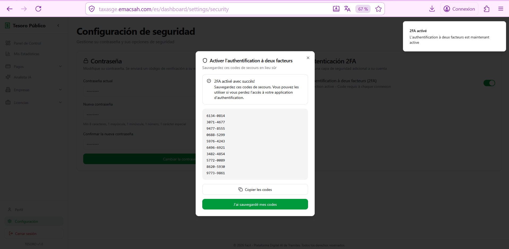
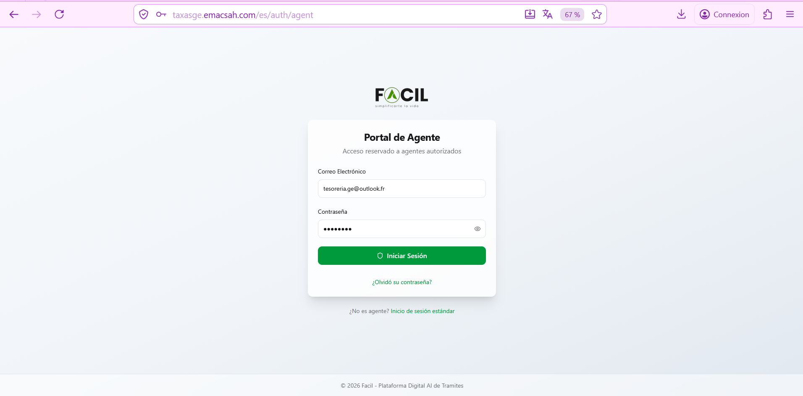
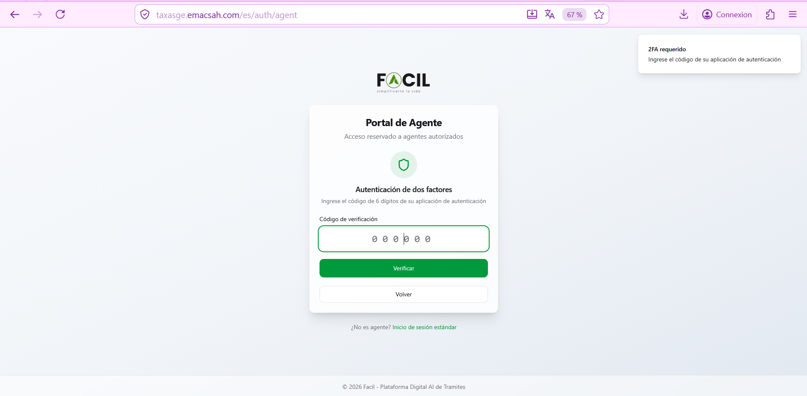
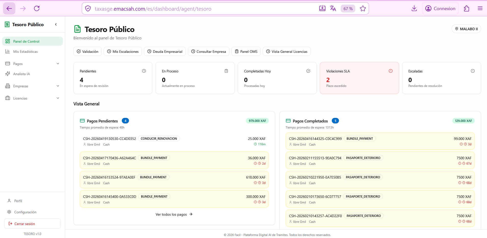
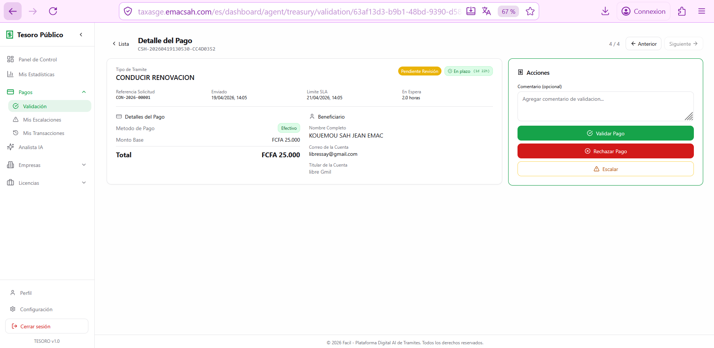
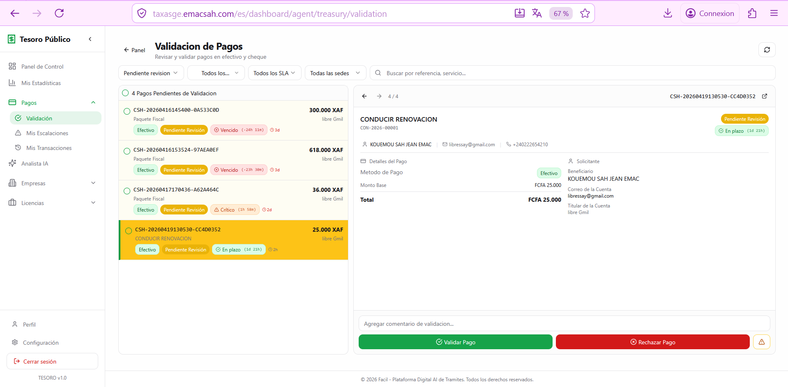
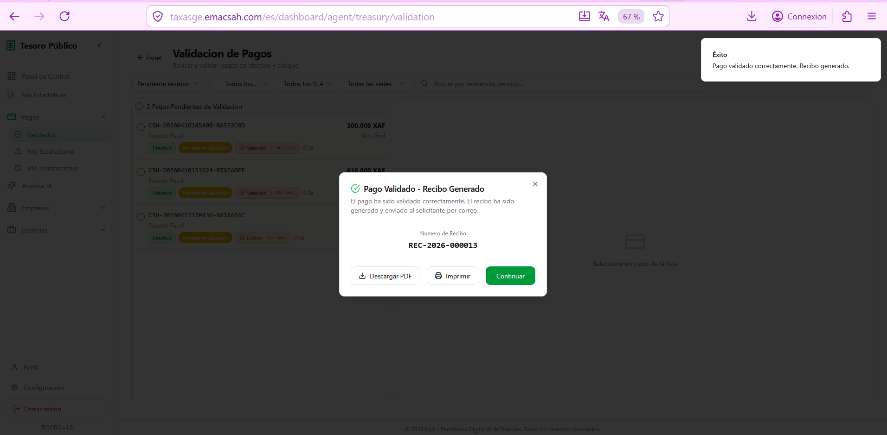
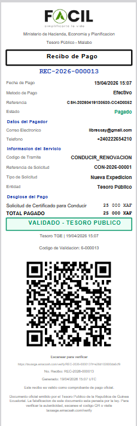
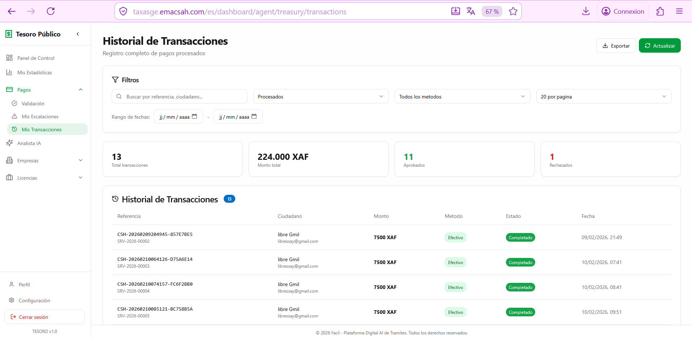

Agente Tesoro Público: validación de pagos y reconciliación BANGE
Los agentes del Tesoro Público son los validadores finales de todos los pagos que pasan por Facil. A diferencia de los agentes Ayuntamiento o Cámara que validan tasas concretas, el Tesoro centraliza la reconciliación bancaria: confirma que el dinero ha entrado realmente en las cuentas del Estado vía BANGE Mobile Money, transferencia bancaria o ingreso en efectivo. Cada validación genera el recibo oficial firmado del Tesoro Público.
1. Autenticación reforzada (2FA obligatorio)
Por la sensibilidad de las operaciones (validación de millones de XAF al día), los agentes del Tesoro tienen una autenticación 2FA obligatoria a cada inicio de sesión, sin excepción posible. La pantalla de configuración de la cuenta permite generar códigos de respaldo en caso de pérdida del teléfono.



2. Dashboard del Tesoro Público
El dashboard agrupa los pagos según su estado: pendientes de validación (cola de trabajo), completados del día (auditoría rápida), escalados al supervisor (casos ambiguos). Los KPI muestran el importe total pendiente, el importe validado en el día, la tasa de validación automática (pagos auto_approved sin intervención humana, gracias a los webhooks BANGE).

3. Validación de un pago: lista + detalle lateral
El agente abre la lista de pagos pendientes. Al hacer clic en una entrada, el panel lateral muestra los datos esenciales: tipo de servicio (CONDUCIR_RENOVACION, PASAPORTE_NUEVO, etc.), importe, modo de pago, identificador de transacción BANGE, justificante (extracto bancario o capture del SMS de confirmación BANGE).

4. Vista completa de un pago + 3 acciones disponibles
Si la información del panel lateral es insuficiente, el agente abre la vista completa con el botón «Ver detalle». La pantalla muestra todos los datos: histórico de transacciones BANGE para esa cuenta, capturas del recibo de pago, datos del ciudadano. Tres botones: «Validar» (apruebe el pago, genere el recibo), «Rechazar» (motivo obligatorio: importe incorrecto, fraude, doble pago), «Escalar» (caso ambiguo, transmite al supervisor del Tesoro).

5. Generación del recibo Tesoro Público
Tras la validación, el sistema genera el recibo oficial del Tesoro Público (formato distinto del Ayuntamiento o Cámara). Este recibo es legalmente vinculante: prueba que el ciudadano ha pagado las tasas debidas al Estado. Lleva el número único REC-2026-NNNNNN, la firma electrónica del Tesoro, un QR de verificación (página 57) y la mención «Recibo válido para todas las administraciones de Guinea Ecuatorial».


6. Mis transacciones (auditoría agente)
El menu «Mis Transacciones» reúne todos los pagos que el agente ha tratado, con filtros (fecha, tipo de servicio, importe, modo de pago) y métricas agregadas: importe total validado del mes, número medio de validaciones por día, tasa de rechazo. Útil para el cierre semanal de actividad del agente.

7. Reconciliación bancaria automática
La mayoría de los pagos vía BANGE Mobile Money son validados automáticamente por el sistema gracias al webhook BANGE: cuando un ciudadano confirma su pago con el PIN, BANGE envía una notificación a Facil que valida el pago en menos de 5 segundos. Estos pagos pasan directamente al estado auto_approved sin intervención del agente. El agente Tesoro interviene solo en los casos no automáticos: pagos en efectivo en la oficina, transferencias clásicas con extracto bancario, casos donde el webhook ha fallado y debe ser reconciliado manualmente.
Las funciones Verify Treasury permiten al agente buscar manualmente una transacción por su identificador BANGE para resolver discrepancias (ver página 68).